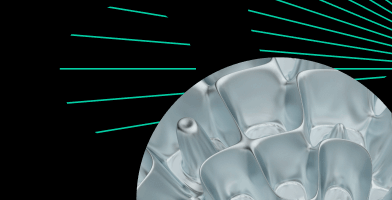

DoubleCloud has wound down operations
| This is an archived version of the site.
Learn more →
Why DoubleCloud
Performance
Get the best performance with the highest ROI
Security
Keep your data protected and maintain compliance
DoubleCloud vs. other solutions
Learn how DoubleCloud’s products compare to other solutions
Customer stories
See our solutions in action
Get more and spend less with DoubleCloud →
Products
Managed Service for ClickHouse®
The fastest, most resource-efficient OLAP database for real-time analytics
Managed Service for Apache Kafka®
A leading data streaming technology for large-scale, data-intensive applications
Managed Service for Apache Airflow®
Open-source tool to orchestrate and monitor workflows
Data Transfer
No-code ELT tool for aggregating, collecting, and migrating data
Data Visualization
Free tool to create, modify, and share dashboards and charts
Solutions
By use case
Customer-facing analytics
Provide business insights for your clients or partners
Real-time analytics
Build a data infrastructure to collect, process, and analyze data in real time
Observability and monitoring
Analyze terabytes of your logs, events, and traces with ease
By industry
AdTech and MarTech data analytics
Extract and analyze data from Meta ads, Google ads, LinkedIn ads, and others
Analytics for mobile and gaming apps
Optimize and scale your mobile and gaming app analytics
EdTech data analytics
Improve online learning and identify new sales opportunities
FinTech data analytics
Manage and process large amounts of financial data efficiently
Resources
Using DoubleCloud
DoubleCloud API
Read up on API tutorials and instructions
Terraform
Deploy and manage cloud resources with the infrastructure-as-code approach
Status updates
Check the current operational status of our services
Support
Learn more about our support tiers
Discover
Webinars
Sign up for the next webinar or watch previous ones
Blog
Get insights from our team and the latest news
Grab your ebook →
Company
About DoubleCloud
Careers
Contact us
Pricing
Documentation
Blog
All topics
ClickHouse
ClickHouse use cases: Revolutionizing data analysis
Product Updates
DoubleCloud’s 8th product update
Insights
Doublecloud’s Managed ClickHouse on Google Cloud Platform - Get more performance for your money
Written By: Stefan Kaeser, DoubleCloud Senior Solution Architect
Insights
Accelerate your data analytics and optimize costs with ClickHouse and DoubleCloud
Written By: Amos Gutman, DoubleCloud Senior Solution Architect

Glossary
Apache Kafka vs. Flink - Choosing the right streaming data platform
Glossary
Apache Kafka vs Spark: Real-time data streaming showdown
Glossary
What is data quality? Importance, dimensions & impact
Glossary
ETL vs data pipelines: What are they and how do they work?
ClickHouse
ClickHouse and Druid: A Deep Dive into Features, Use Cases, and Tradeoffs
Glossary
What is Streaming Analytics? Use Cases & Examples
ClickHouse
Why is ClickHouse so fast? Features that make it lightning fast
Insights
What we've learned from the development of GPT-4 integration
See more
Back to top
3
4
5
6
7
Load more
Sign in to save this post
Sign In